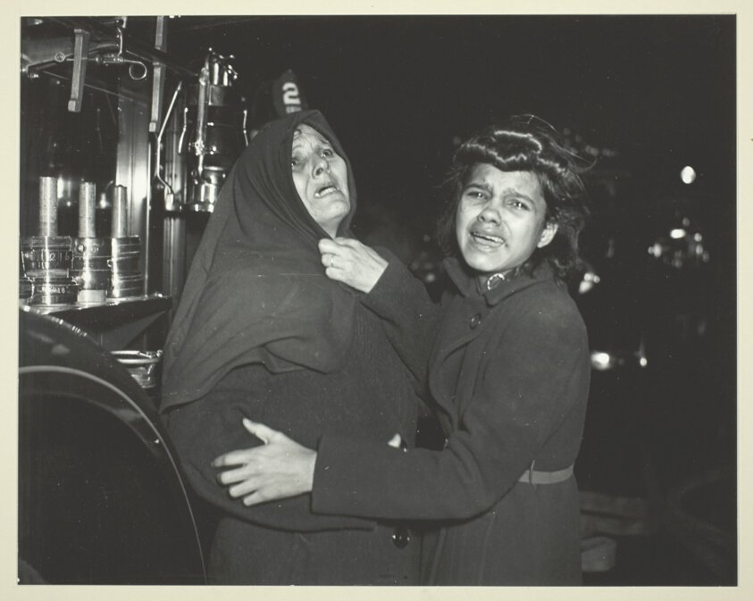

Tenement Fire, Harlem
Weegee (Arthur Fellig) · 15 December 1939 · Gelatin silver print · 26.9 × 34 cm · Art Institute of Chicago
In copyright. Look and learn: shown for study, not for download.
Acme Newspictures sent this out in December 1939 with Weegee's own words at the head of the caption: the mother and daughter are watching another daughter and her baby die in a fire on the top floor of a tenement, where the stairway had collapsed before firemen could reach them. Weegee had worked in Acme's darkroom from 1924 until 1935, when he left to work freelance. After his death his companion Wilma Wilcox left his archive, 16,000 photographs and 7,000 negatives, to the International Center of Photography.